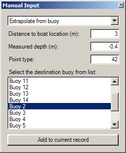
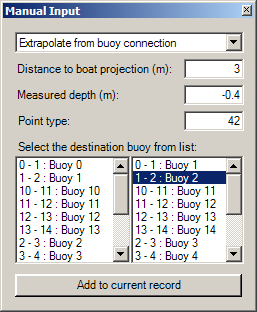
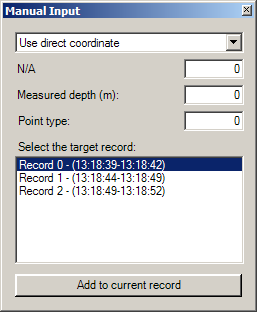

|
||||||

|
Für das manuelle Einmessen von Punkten stehen drei Varianten zur Verfügung:
Der gewünschte Modus kann über die ausklappbare Liste im oberen Bereich des Fensters gewählt werden. Bojen verwenden  Als Voraussetzung für die Benutzung dieser Funktion gelten:
Um der laufenden Aufnahme einen neuen Punkt hinzuzufügen, muss die Zielboje aus der Liste im unteren Teil des Fensters ausgewählt werden. Dies definiert die Richtung der neuen Koordinate. Anschließend werden unter Angabe von der Entfernung zum GPS und der gemessenen Tiefe (i.d.R. negative Zahl) die Daten vervollständigt. Die Koordinate des manuellen Punkts berechnet sich aus der Richtung zur Boje und Entfernung zum GPS. Bojenverbindungen verwenden  Als Voraussetzung für die Benutzung dieser Funktion gelten:
Um der laufenden Aufnahme einen neuen Punkt hinzuzufügen, muss die Bojenverbindung und eine Boje als Richtung aus den Listen im unteren Teil des Fensters ausgewählt werden. Dies definiert die Projektion der neuen Koordinate. Anschließend werden unter Angabe von der Entfernung zum GPS und der gemessenen Tiefe (i.d.R. negative Zahl) die Daten vervollständigt. Die Koordinate des manuellen Punkts berechnet sich aus der Projektion der GPS-Koordinate auf die Bojenverbindung und dem Abstand in Richtung der gewählten Richtungsboje. Direkte Übernahme der Koordinate  Als Voraussetzung für die Benutzung dieser Funktion gilt:
Die zuletzt empfange Koordinate wird automatisch in den gewählten Record gespeichert. |